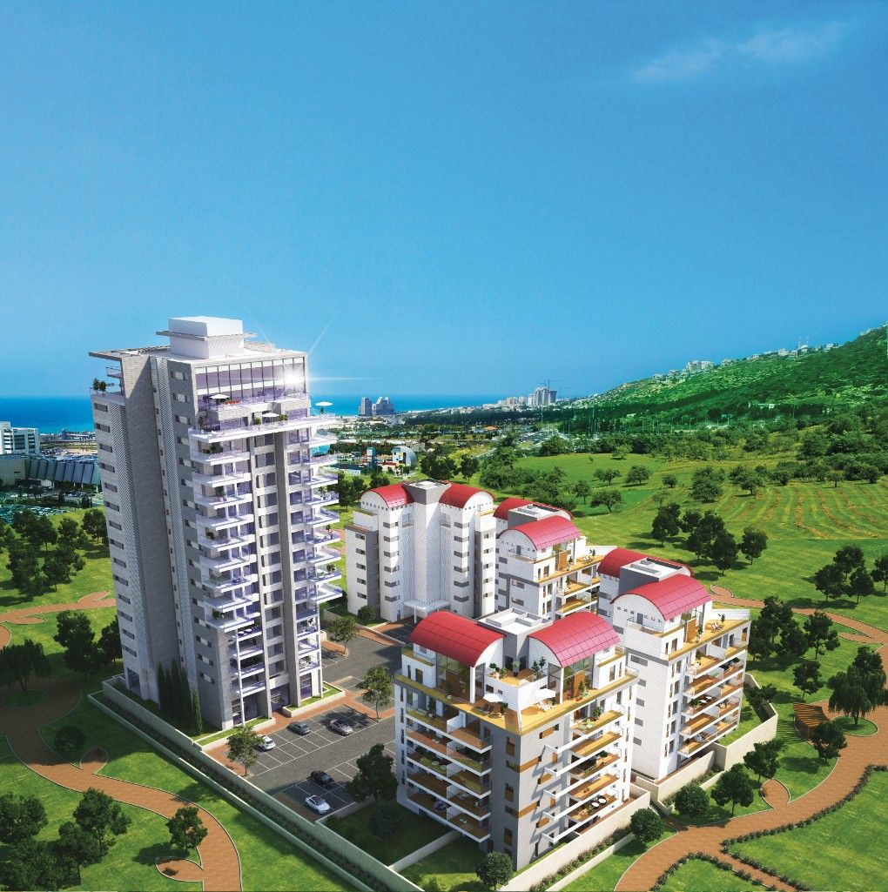
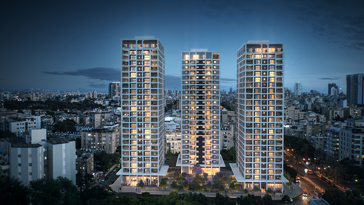
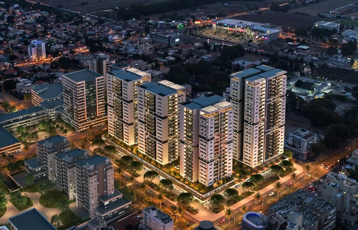
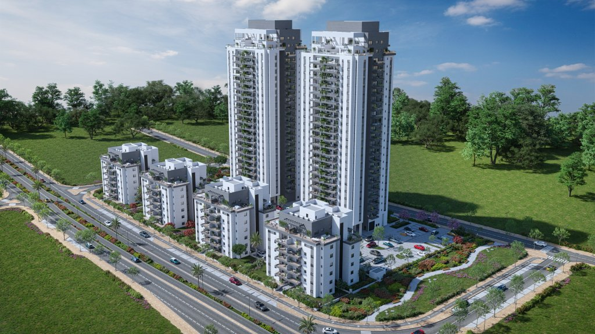

שני מגדלים בני 22 ו־24 קומות בלב שכונת ״אפקה״ בקרית ביאליק, שכונה עטופת פארקים רחבי ידיים, שמורות טבע עוצרות נשימה
הפרויקט הינו פרויקט חדשני במיקום המדויק ביותר בנהריה, הכולל פיתוח של בתי ספר חדשים, גני ילדים, גני משחקים, מבני ציבור, פארקים ירוקים, מרכז מסחרי וכל מה שצריך על מנת לחוויית מגורים קהילתית, נוחה ומשפחתית והכל במרחק הליכה מהבית
מדובר בפרויקט בינוי מהגדולים בצפון הממוקם על מורדות הר הכרמל, וישלב סביבה עירונית בפארק מטרופוליני ענק עם שני אגמים, מוסדות חינוך וציבור, שטחי מסחר ומשרדים, טבע ירוק ומקווי מים

הפרויקט ממוקם במערב חיפה במורדות הכרמל, בלב שכונה מתקדמת, בתכנון מודרני ובמרחק קצר מהים.
מיקומו האסטרטגי מאפשר גישה נוחה לצירים מרכזיים כמו כביש מנהרות הכרמל, כביש פרויד, כביש 2, כביש 4 והכל במרחק קצר מתחנת הרכבת.
בקרבת הפרויקט ניתן למצוא מרכזי תעשייה, קניות, בידור וספורט, הייטק ומדע

שלושה מגדלי יוקרה בני 24 קומות המציעים תמהיל דירות של 3-5 חדרים ופנטהאוזים בעלי מפרט טכני ברמה גבוהה.
מתחם המגורים בפינת הרחובות ויצמן וסוקולוב מציע לכם גישה מהירה לצירי התנועה המרכזיים של העיר, קרבה לחוף הים ולפארק איינשטיין החדש

אאורה סיטי חדרה הוא פרויקט מעוצב המציע סגנון ואיכות מרהיבים. שכונת מגורים עם פארק ירוק, גני משחקים, רחבת תרבות ושטחי ציבור. הפרויקט כולל דירות 5 חדרים ודירות גן 4-5 חדרים, חלקם עם נוף פתוח לים, בריזות ושקיעות מרהיבות לצד חווית מגורים מעוצבת ופונקציונלית

הפרויקט כולל שני מגדלים בני 25 קומות ו־4 בנייני בוטיק בני 6 קומות, בהם תוכלו ליהנות מתמהיל מגוון של דירות בנות 3, 4, ו־5 חדרים, דירות גן ופנטהאוזים יוקרתיים, בעלי מפרט עשיר, חללים מרווחים וסטנדרט בנייה בלתי מתפשר. במרחק הליכה קצר מהפרויקט תמצאו את אשכול החינוך השכונתי, בית הכנסת הגדול, פארקים ציבוריים, מרכז מסחרי שכונתי ואת גשר הולכי הרגל החדש, המחבר את השכונה לקריית ביאליק הוותיקה
שכונת הפארק הינה שכונה חדשה בבירת הנגב המשתרעת על כ- 1150 דונם. השכונה כוללת שתי שדרות, האחת מרכזית המובילה מכיכר הכניסה ועד לפארק ושדרה נוספת שלאורכה ימוקמו קריות חינוך, כיכר מרוכזת, מבני ציבור ופארקק רחב היקף להולכי רגל ורוכבי אופניים. לשכונה קרבה לנתיבי התחבורה הציבורית לרבות הרכבת כל המשתנים הללו יוצרים לתושב חבילת מגורים מושלמת